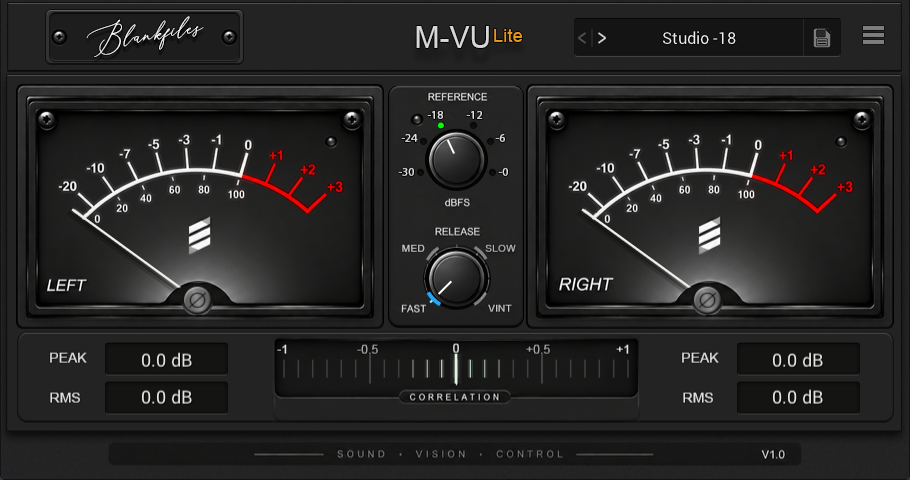

Dual VU meters
Clear left and right analog-style metering for fast visual feedback.
A focused stereo VU meter for clear, musical level monitoring.

SIMPLE TOOLS. SERIOUS RESULTS.
Clear left and right analog-style metering for fast visual feedback.
Choose your reference level and meter response to suit your workflow.
Instant numerical readouts alongside the VU display.
Keep an eye on stereo compatibility with the integrated correlation meter.
Quickly recall useful metering configurations from the preset bar.
A focused free edition built to stay out of the way while you work.
SYSTEM REQUIREMENTS
BLANKFILES AUDIO PLUGINS